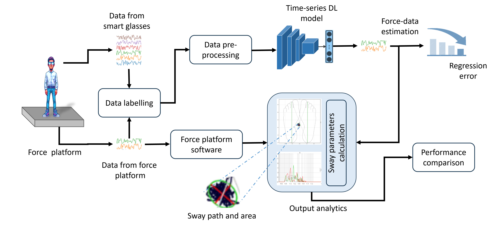

This diagram illustrates our approach for evaluating postural balance using smart glasses (IMU) and a force platform. IMU data is preprocessed and used to train deep learning models for force estimation. The system calculates sway parameters, enabling a comparison with ground-truth force platform measurements for clinical assessment and monitoring.